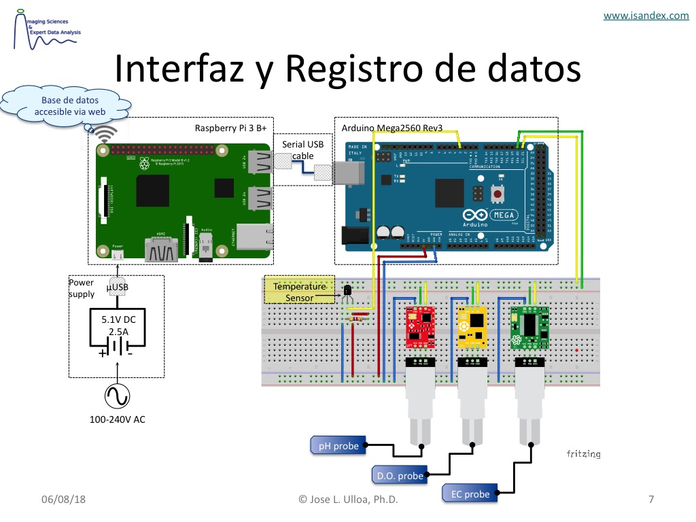

Sobre Pydroponia¶
Pydroponia es un sistema automatizado de recoleccion de datos para medir la calidad de nutrientes en cultivos hidroponicos. Estos parametros de calidad son medidos continua y automaticamente por sensores especializados y transferido a una base de datos.
El origen del nombre Pydroponia es simplemente la fusion entre «Python», el lenguage de programacion utilizado, e «Hidroponia».
En esta guia se detallan las instrucciones de montaje y operacion de Pydroponia.

Figura 1 Bosquejo del circuito de Pydroponia
- Jose L. Ulloa,
- Agosto, 2018